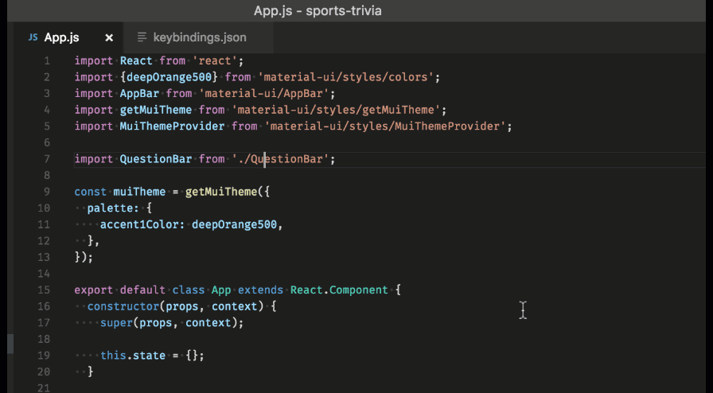
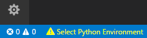
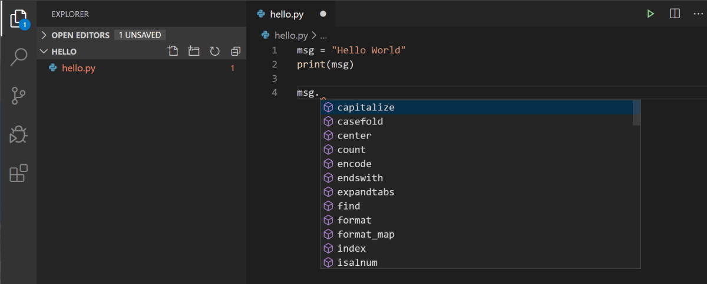
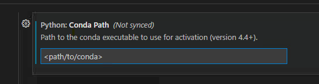
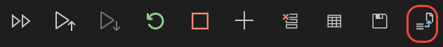

Workflow tools explained
Getting data science tools configured to your needs and working together is a core part of any data science project. Learning how to troubleshoot problems with these tools quickly is an important skill.
At the end of this guide, the reader should feel more comfortable choosing & using tools to suit their needs.
Note: This guide (and most of this repository) is written primarily for Python development but some parts are generally applicable to other languages. Most of the more specific tips and tricks are examples from VS Code (other IDEs are available!).
The terminal
A terminal is basically just a way of giving your computer commands via text (see the more detailed description in the intro to Git guide. This is important because you can do lots of things from the terminal: run Python scripts, launch interactive notebooks, etc.
You may also see this referred to as the 'shell'- there is a difference but the terms are often used interchangeably.
Many computers only have a terminal, so you have to know how to use the terminal if you want to do things on them. For example: if you set up an instance on Amazon Web Services (AWS) or Google Cloud, you'll need to interact with that machine via the terminal.
There are many different terminals, but all of them do basically the same thing.
Windows comes with a couple of default terminals that you can find using Windows search: CMD and PowerShell. Although these shells have some similarities with the shells that data scientists usually use (such as bash and zsh), CMD and PowerShell are different enough to sometimes cause issues. Many of the commands are different, and many of the programs that we might want to use can't be called through them.
You're welcome to use these default shells if you want, but remember that the commands you find on StackOverflow may not always work.
Different terminals use slightly different languages, and so you may find that if you're used to the terminal on a Mac, you need different commands when working on a Windows machine. Some terminals allow you to workaround this- such as Git Bash. Git Bash works on Windows, but emulates the most common terminal experience on a Mac or Linux, allowing to use the same commands.
VS Code also comes with an integrated terminal which you'll be able to use.
Git
Version control is an incredibly important software engineering tool that data scientists use. Essentially, version control helps you do these three things:
- Save "snapshots" of your code, so that you can track your changes over time and go back to different versions of code if needed. (For example, if you break something).
- Develop new parts of your code, while keeping the primary version of your code clean (using "branches").
- Collaborate with others on developing different parts of the same code.
The most popular version control software is called Git, and there's a very useful website called GitHub which is used in conjunction with git to store your code online and collaborate with others. You can think of git as being local (on your computer), and GitHub as being in the cloud.
Some workers in the NHS will find themselves working not on GitHub, but on GitLab. These two services are very similar, and for our purposes can be used interchangeably.
Generally speaking, you'll want to create a new git "repository" (or repo, for short) for each project you work on. A git repo is simply where all of your code for a project lives.
For more information on Git, and instructions on how to use it, see the intro to Git guide.
Python
The best programmers use the right tool for the job, and this tool may not necessarily be Python. The choice for many is between Python and R: we do not include many R resources in this repository as most people in former-NHS Digital use Python but RAPs are perfectly possible in R. If anything, technical setup is slightly more straightforward in R, as RStudio is a fully integrated development environment that can easily be version controlled. Other open-source languages, such as Rust, Go & Julia may also be options to consider.
A note on Python versions It's very important to pay attention to the version of Python you are using to develop your code. This is because some versions of Python packages do not work in the same way with older/newer versions. A handy tool for managing multiple versions of Python is pyenv, or pyenv-win for Windows. If you are using Anaconda, you will be able to specify which version of Python you want to use when you create a conda environment. We appreciate that if you are using a centrally managed virtual machine, there will often only be one version of Python available, in which case, not to worry!
Conda environment
Virtual environments are a way to make sure your code will run correctly for you and others. By always coding inside a virtual environment, you make it more likely that your work will be usable by others.
For more information about why it is highly recommended that you use virtual environments for all of your coding, see our virtual environments guide.
We recommend using conda (bundled with Anaconda), an open-source package manager, because, in addition to all the standard benefits of package and environment management:
- It runs on Windows, MacOS and Linux
- It's fast and easy to use
- You can specify the Python version you want to use
- It was created for Python, but you can also use it for R and other languages
The README file
This will show up on GitHub when we push the code, written in Markdown (hence the .md extension).
Markdown is a "markup language", which is basically just a way to write plain text that end up getting formatted nicely. It is used on GitHub and GitLab, and can also be used in an interactive Python notebook cell.
On the first line of your README.md file, you should write the title. You must put a # (hash) key followed by a space before the title of your project. The number of hashes sets the header level, with one hash being the title. Other headings in your README should be at least two hashes.
On the second line, put a short, one-line description of the project.
Code Editing
Data scientists can have very strong feelings about their preferred IDE or code editor. Your choice can make a huge difference in your ability to perform your role effectively.
IDEs and code editors are development environments that programmers use to write code, test it, debug it and then push changes to GitHub or another version control platform. The right IDE or code editor should work well with the programming languages you want to use, make it easy to organise your files, and allows you to share them without difficulty.
IDEs and text editors offer many properties and options to customize your development environment. Some prefer full-on IDEs, while others like lightweight text editors.
There are a lot of good editors out there and it doesn't really matter which one you go with, as long as you like it and know how to use it.
Our preferred editor is VS Code, because:
- It's easy to install and setup
- The command palette makes it easy to customise your setup
- You can sync your settings to GitHub so you never lose them!
- You can use extensions to make it as powerful as you need it to be (this may be restricted if you are using your work computer).
- It has very useful functionality right out of the box with all of the features you would expect like an integrated terminal, syntax highlighting & code completion, linting and debugging tools.
- Jupyter is supported, via interactive cells and native notebook support
If you don't have a favourite code editor, we would highly recommend giving VS Code a shot.
Installation and setup
Installing VS Code is simple: go to the VS Code website, click "Download", and install using the instructions.
Using the terminal is the easiest way to launch VS Code. Open up a terminal, type the following, and hit Enter.
By starting VS Code in a folder, that folder becomes your "workspace".
If you want VS Code to open up in a particular location, add the file path to the instruction:
Command Palette
Access the 'Command Palette' (Ctrl+Shift+P) from within VS Code to see a list of possible commands and settings.
You can search for something particular by typing what you are looking for in search bar. For example, search for "lowercase" to show the command that you could use to lowercase a text selection.
The command palette is a great place to look for any kind of code editing functionality you might need.

Synchronise your settings
You can configure settings just for your workspace- as well as set global settings for all projects you work on.
A handy feature of VS Code is Settings Sync, which lets you sync VS Code configurations such as settings, keybindings, and installed extensions to your GitHub account so that you can have the same setup across different machines, and if you have to do a fresh install of VS Code your settings are not lost.
You can turn on Settings Sync from the Manage gear menu at the bottom of the Activity Bar:

Extensions
VS Code is set up to work out-of-the-box, but that is just the start! VS Code extensions let you add languages, debuggers, and tools to your installation to support your development workflow.
Find the "extensions" icon on the left-hand bar and click it. You should see a search bar where you can search for extensions.
Search for the Python extension (you can just search "python"), and install it. Look at the other icons on the left and other menu items to get a feel for what all is in VS Code.
Python syntax highlighting and IntelliSense
VS Code is a great editing tool for Python code and includes several features to help you be productive when writing code.
Creating a new file with a ".py" extension, e.g. "my_script.py". tells VS Code that this file is a Python file.
However, in order for VS Code to run Python files, you must tell VS Code which version of Python to use.
Select a Python interpreter
From within VS Code, select an interpreter by opening the Command Palette (Ctrl+Shift+P), start typing 'Python: Select Interpreter', then select the command.
The command presents a list of available interpreters that VS Code can find automatically, including virtual environments.
You will see your Python version in the bottom right-hand corner:

Note: When using Anaconda, the correct interpreter should have the suffix
('base':conda), for examplePython 3.7.3 64-bit ('base':conda). If you activate your conda environment before opening your workspace in VS Code from the terminal, this should be automatically selected.
Once your Python interpreter has been selected, VS Code knows to highlight the text using Python syntax highlighting rules.
IntelliSense
IntelliSense is a code completion aid. The user is given a list of options when they begin to type the variable named, greeting.

IntelliSense generally opens automatically in most useful situations. You can also trigger it by pressing ctrl + space.
Linting in VS Code
Linting helps you identify and correct programming errors or unconventional coding practices in your Python code.
For example, linting detects use of undefined variables, package imports that are not used, calls to undefined functions, missing brackets etc.
You can easily toggle between enabling and disabling your linter, through the Command Palette (Ctrl+Shift+P), selecting the Python: Enable/Disable Linting command.
Running code in VS Code
Once you have selected a Python interpreter, there are several different ways to run Python code.
You can run your Python script by clicking the Run Python File in Terminal play button in the top-right side of the editor.

The button opens a terminal in which your Python interpreter is automatically activated, then runs your script.
Terminal in VS Code
VS Code includes an integrated terminal that starts at the root (highest point) of your workspace.
To open the terminal:
- Use the Ctrl+` keyboard shortcut with the backtick character.
- Use the View > Terminal menu command.
- From the Command Palette (Ctrl+Shift+P), use the View: Toggle Terminal command
- You can create a new terminal via the Terminal menu with Terminal > New Terminal.
You'll see a terminal open up in the bottom of VS Code.
The integrated terminal can use various shells installed on your machine, with the default PowerShell on Windows. You can select other available shells to use in terminal instances or as the default such as Git Bash.
In the terminal, you can execute your Python script by running:
You can also add a path to your conda executable (conda.exe in the Anaconda installation folder) in settings of VS Code. This is useful as then you can add new packages to your environment from within VS Code.

Note: it is not recommended to add conda to your path on Windows.
Interactive cells in VS Code
VS Code allows you to easily run bits of your code through its integration with Jupyter. Jupyter is an open-source project that lets you easily combine Markdown text and executable Python source code on one canvas called a notebook.
To work with this integration, you must install the Jupyter package in your base Python, and install the ipykernel package in an activated environment.
You can then create and run Jupyter-like code cells, defined within Python code using a # %% comment:
When the Python extension detects a code cell, it adds Run Cell and Debug Cell CodeLens buttons for you to manually run sections.
For more information on interactive cells in VS Code, see the documentation.
Note: for importing functions from other scripts to work, you need to set your Jupyter notebook root to be
${workspaceFolder}. Find this via Command Palette (Ctrl+Shift+P) and opening Settings.
You also need to make sure that the Jupyter 'kernel' that starts when you run a cell is referencing your virtual environment.
Interactive Python notebooks
Jupyter notebooks are fantastic for exploration, but terrible for version control and can often lead to errors (for a thorough discussion of how Jupyter notebooks do not always fit into a reproducible development workflow see our comparison of IDEs and notebooks.
VS Code supports using Jupyter notebooks natively as well as in your Python code via interactive cells. You can create, open and run Jupyter notebooks (.ipynb files) from inside VS Code.
Handily, you can also convert Jupyter notebooks to Python code files very easily from within VS Code. This means that you had develop and try out bits of code in a Jupyter notebook, and then convert it to Python code when you've got it working.
Use the convert icon on the toolbar to convert the Notebook (.ipynb) file to a Python file (.py).

Once you've converted the file, you can run the code as you would with any other Python file. This offers a more convenient way to find and resolve code bugs, which is difficult to do directly in a Jupyter notebook.
External Links Disclaimer
NHS England makes every effort to ensure that external links are accurate, up to date and relevant, however we cannot take responsibility for pages maintained by external providers.
NHS England is not affiliated with any of the websites or companies in the links to external websites.
If you come across any external links that do not work, we would be grateful if you could report them by raising an issue on our RAP Community of Practice GitHub.